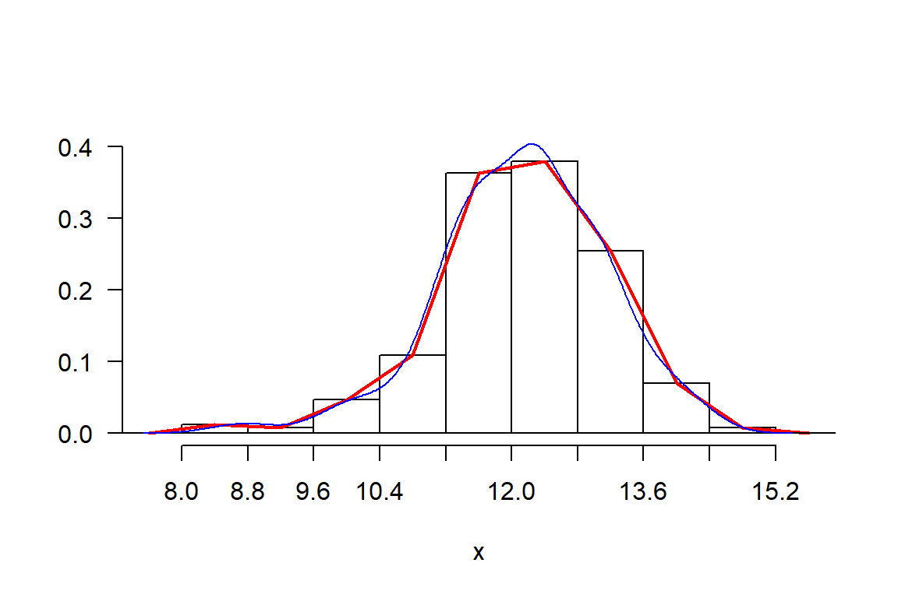
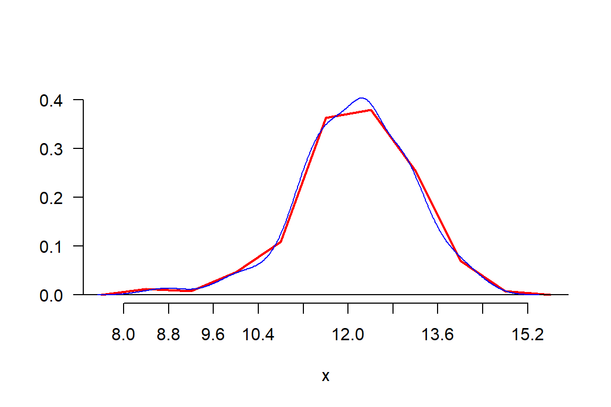

Chapter 3 Indicadores estadísticos
3.1 Importancia de los indicadores
Los indicadores son utilizados para expresar en forma resumida su comportamiento, de tal manera que nos permita decidir sobre su estado y poder comparar con otros similares.
3.2 Indicadores de centralidad
- Promedio. Es el punto central de valores continuos y es representativo cuando no se tiene valores extremos.
\[\text{Promedio = }\sum_{i=1}^n \frac{x_i}{n}\]
Para ilustración se utilizará el inventario de maíz en la localidad 2.
Loc2 <- maiz2[maiz2$Localidad=="L2",]
cat("Promedio de la longitud de grano en la Localidad 2:",mean(Loc2$LG,
na.rm = TRUE), "mm.\n")Promedio de la longitud de grano en la Localidad 2: 12.13244 mm.El promedio de longitud de grano en la localidad 2 fue de 12.13244 mm.
- Mediana. Una medida robusta de centralidad, útil cuando hay valores extremos (outliers), su uso frecuente es en variables de tipo ordinal o de escala de jerarquía. El valor es obtenido después de ordenar los datos y obtener el punto que divide al conjunto de datos en dos partes iguales.
Si \(X_i\) son los valores ordenados del conjunto, y \(n\) es el número de datos, entonces la mediana es calculada como;
\[\text{Mediana} = \left \{ \begin{array}{ll} (X_{n/2}+X_{n/2+1})/2 & \text{si n es par}\\ (X_{(n+1)/2}) & \text{si n es impar} \end{array} \right.\]
Para ilustración se utilizará el inventario de maíz en la localidad 2.
cat("Mediana de la longitud de grano en la Localidad 2:",median(Loc2$LG,
na.rm = TRUE), "mm.\n")Mediana de la longitud de grano en la Localidad 2: 12.205 mm.El valor que divide a las observaciones de la longitud de grano en la Localidad 2 en dos partes iguales fue de 12.205 mm. También se puede decir que, el valor máximo obtenido por el 50 % de observaciones con menor valor de longitud de grano en la Localidad 2 fue de 12.205 mm.
- Moda. Es el valor más expresivo del conjunto, en datos cualitativos, es el más abundante. Si hay dos, se indica una población bimodal. No es frecuente en datos discretos y mucho menos en continuos. Sin embargo, es posible obtener la moda en datos continuos, después de agruparlos.
\[\text{Moda = Valor más frecuente del conjunto}\]
longitud <- Loc2$LG
x <- sort(longitud)
n <- length(x)
h <- graph.freq(x,plot=FALSE)
moda <- stat.freq(h)$mode[1,3]
cat("Moda de la longitud de grano en la Localidad 2:",round(moda,2),"mm.\n")Moda de la longitud de grano en la Localidad 2: 12.09 mm.El valor más frecuente de la longitud de grano en la Localidad 2 fue de 12.09 mm.
3.3 Indicadores de dispersión
- Rango. Es la diferencia de los valores extremos (máximo y mínimo) de los datos. Útil cuando se tiene menos de 10 observaciones.
\[\text{Rango = max(x)-min(x)}\]
# range(x)
# diff(range(x))
# rango <- max(x)-min(x); rango
cat("Rango de la longitud de grano en la Localidad 2:",diff(range(x)),"mm.\n")Rango de la longitud de grano en la Localidad 2: 6.19 mm.La diferencia entre el valor máximo y el valor mínimo de la longitud de grano observada en la Localidad 2 fue de 6.19 mm.
- Desviación estándar (S). Medida de variación obtenida frecuentemente de una muestra de más de 10 observaciones.
\[S= \sqrt {\sum_{i=1}^n \frac{(x_i-\bar{x})^2}{n-1}}\]
cat("Desviación estándar de la longitud de grano en la Localidad 2:",sd(x),"mm.\n")Desviación estándar de la longitud de grano en la Localidad 2: 1.018199 mm.La media de la longitud de grano en la localidad 2, se dispersa o varía en + o - 1.02 mm.
- Varianza o Variancia (\(S^2\)). Medida de variación obtenida frecuentemente de una muestra de más de 10 datos.
\[S^2 = \sum_{i=1}^n \frac{(x_i-\bar{x})^2}{n-1}\]
cat("Variancia de la longitud de grano en la Localidad 2:",var(x),"mm^2.\n")Variancia de la longitud de grano en la Localidad 2: 1.036729 mm^2.La variancia de la longitud de grano en la localidad 2 fue de 1.03 \(mm^2\). Eso indica que la suma de los errores o residuos al cuadrado sobre n-1 fue de 1.03 mm^2.
- Covarianza o Covariancia. Es la medida de variación conjunta que tiene dos variables aleatorias. En el caso de medidas alométricas, es útil la covariaza para medir la variación conjunta entre la altura y diámetro de los árboles. Es una medida recomendada con muestras de más de diez observaciones.
\[cov(x,y) = \sum_{i=1}^n \frac{(x_i-\bar{x})(y_i-\bar{y})}{n-1} \]
# X <- Loc2[,5:6]
X <- Loc2[,c(5,6)]
V <- var(X,na.rm = TRUE)
cat("Covariancia de la longitud y el ancho de grano en la Localidad 2:",V[2,1],".\n")Covariancia de la longitud y el ancho de grano en la Localidad 2: 0.03575264 .La variación conjunta de la longitud de grano con el ancho de grano en la localidad 2 fue de 0.0357, por lo tanto, existe una relación positiva entre la longitud de grano y el ancho de grano.
- Rango intercuartil (IQR): Medida de variación apropiada cuando hay valores extremos con fines de comparar con otros grupos. Se calcula como la diferencia entre los cuartiles 3 y 1.
\[IQR = Q_3-Q_1\]
cat("IQR de la longitud de grano en la Localidad 2:",IQR(x,na.rm = TRUE),".\n")IQR de la longitud de grano en la Localidad 2: 1.32 .El rango intercuartil es 1.32, lo que significa que, como la mediana fue de 12.205 mm, entonces el \(50\%\) de mazorcas evaluadas de maíz está dispersa entre 12.865 y 11.545 mm. Aproximadamente su variación sería de \(5.40\%\).
- Coeficiente de variación (CV). Es una medida de variación relativa, útil para comparar la variación de medidas con diferentes unidades.
\[CV= \frac{S*100}{\bar{x}}\]
cv <- function(x){
mean = mean(x)
sd = sd(x)
cv = sd/mean*100
return(cv)
}
cv <- sd(x)/mean(x)*100
cat("Coeficiente de variación de la longitud de grano en la Localidad 2:",raster::cv(x,na.rm = TRUE),"%.\n")Coeficiente de variación de la longitud de grano en la Localidad 2: 8.392368 %.Si el CV es menor igual a 30 %, la dispersión de los datos es homogénea. Si el CV es mayor a 30 % la dispersión de los datos es heterogénea. El CV no debe ser utilizado como una medida de confiabilidad de los datos en inferencia estadística.
La medida de variación de la longitud de grano en la localidad 2 fue de \(8.39\%\), por lo cual, la desviación de los datos con respecto a la media fue homogénea o baja (normal).
3.4 Indicadores de la forma de los datos
Se entiende por la asimetría que puedan presentar.
- Asimetría positiva, cuando se evidencia una tendencia de la cola de los datos hacia la derecha. También llamada asimetría a la derecha.
- Asimetría negativa, cuando se evidencia una cola o tendencia de los datos hacia la izquierda. También llamada asimetría a la izquierda.
- Simetría, presenta una sola moda y no hay tendencia marcada, el punto medio sirve de refereicnai para expresar la tendencia de los datos.
En terminos cuantitativos, se calcula para establecer criterios de considerar asimétría o simetría. Cuando el valor de la asimetría está cercano a cero, se indica población simétrica, los valores podrían ser en terminos absolutos menos de 1. Superior a este valor, se considera asimétrica, y según el signo, este será asimétrica positiva o negativa.
El análisis es gráfico y cuantitativo.
El gráfico de asimetría se observa en la densidad de frecuencia o histograma de frecuencia. El valor esta relacionado al promedio y la mediana.
cat("Coeficiente de simetría de la longitud de grano en la Localidad 2:",skewness(x),".\n")Coeficiente de simetría de la longitud de grano en la Localidad 2: -0.4577135 .El valor de simetría es lejano a 0, por lo tanto, la forma de los datos en la longitud de grano de la localiidad 2 no es simétrico. Existe asimetría negativa por tener un coeficiente de simetría de -0.46.
Gráficamente se observa su forma de la longitud de grano. Es necesario utilizar el histograma en la escala de densidad. Usar la función graph.freq() de agricolae.
h <- graph.freq(x,frequency = 3)
polygon.freq(h,col="red",lwd=2,frequency = 3)
lines(density(x),col="blue")
h <- graph.freq(x, frequency = 3, border="white")
polygon.freq(h,col="red",lwd=2,frequency = 3)
lines(density(x),col="blue")
Se observa una mayor expresión en el histograma de agricolae con el polígono de frecuencia que la densidad.
Tallos y Hojas
Es otra manera de expresar la forma de los datos, es frecuentemente utilizado con pocos datos, porque el proceso es manual. En R se tiene la función stem() que utiliza este procedimiento.
stem(x)
The decimal point is at the |
8 | 4
8 | 78
9 | 0
9 | 5688
10 | 001112234
10 | 5556677889999
11 | 000000011111122222222223333333334444444444
11 | 55555555555666666666666667777777777778888888888888999999
12 | 00000000000000011111111111222222233333333333333333333333334444444444
12 | 5555555556666666777777777778888888889999999999
13 | 000000000001111111111122222222333333444444
13 | 55555556777788999
14 | 000012233
14 | 56Cada dato es expresado en el gráfico con su valor real, si son muchos, será representado por un caracter, para visualizar la forma.
En el ejemplo presentado, se observa que la longitud de grano en la localidad 1 tienen una distrubición asimétrica negativa.